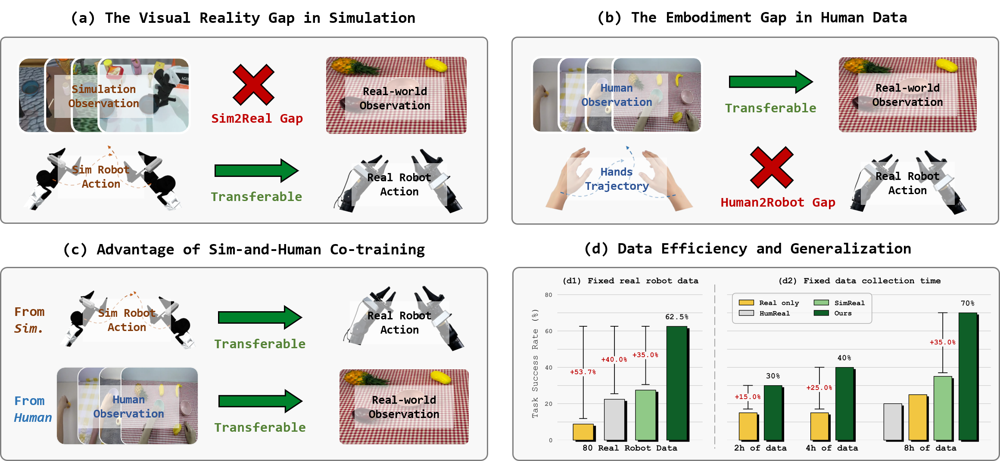
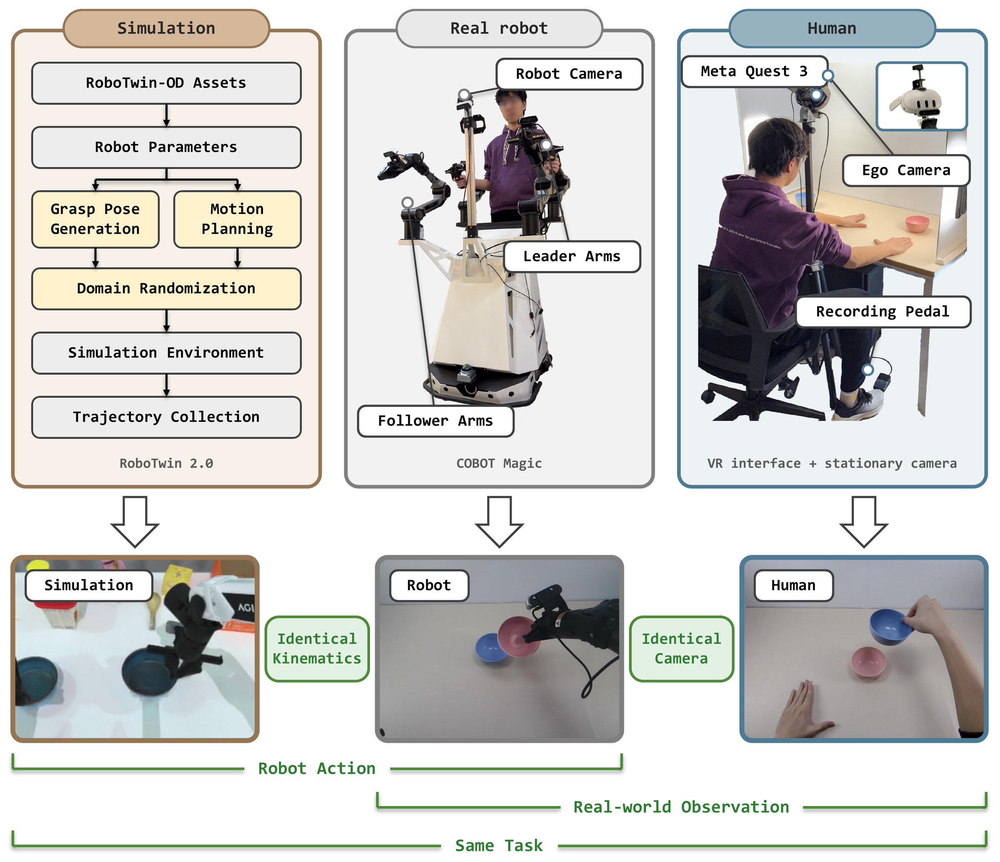
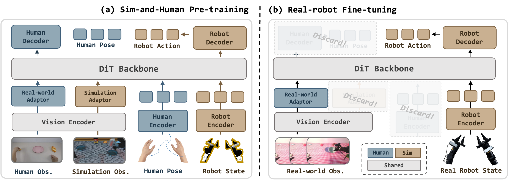
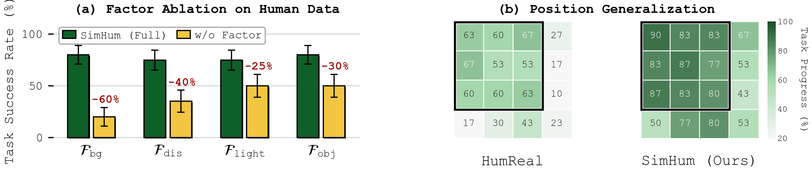
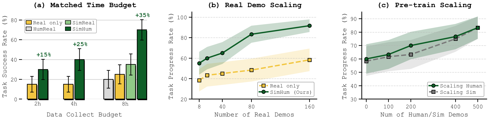

SimHum co-trains a bimanual manipulation policy on simulation data and human demonstrations, then fine-tunes it on a small real-robot dataset. Simulation supplies robot-valid actions. Human demonstrations supply real-world observations. This video walks through the recipe and the real-robot results. With only 80 real-robot episodes per task, SimHum reaches a 62.5% average success rate on held-out OOD scenes. That is 53.7% higher than Real only in absolute success rate. Under matched collection time, SimHum is 35.0% higher than the best single-source pre-training baseline in absolute success rate.
Abstract

Real-robot demonstrations are prohibitively expensive, while simulation data and real-world human demonstrations are both scalable but each leaves a distinct gap—simulation suffers from a sim-to-real visual gap (a), and human data suffers from a human-to-robot embodiment gap (b). In this work, we identify a natural yet underexplored complementarity between these sources: simulation contributes robot-valid actions absent in human data, while human data provides real-world observations that simulation struggles to render. Building on this insight, we present SimHum, a co-training recipe that extracts kinematic priors from simulation and visual priors from human observations, then fine-tunes on a small real-robot dataset (c). SimHum exhibits strong scene-generalizable and data-efficient capabilities. With only 80 real-robot episodes per task, it achieves 62.5% success on held-out OOD scenes across four bimanual tabletop tasks, 53.7% higher than Real only in absolute success rate. Moreover, in a controlled data-collection study with matched collection time, SimHum improves over the best single-source pre-training baseline by 35.0% in absolute success rate (d).
Data Collection
The Complementarity of Heterogeneous Data
Real-world robot data is costly. We overcome this by leveraging the natural complementarity between two scalable data sources: (1) Simulation provides Robot Action but suffers from sim2real visual gap due to inevitable visual rendering discrepancies in simulators; (2) Human Data offers Real-world Observation but suffers from embodiment gap due to kinematic mismatch with robot grippers. By unifying them, we get the best of both worlds.
Hover over the buttons to explore relationships
Simulation Data
Real Robot Data
Human Data
Data Collection Systems
We use three pipelines. Simulation data is generated automatically on top of RoboTwin 2.0. Real-robot data is teleoperated on COBOT Magic with a leader–follower system. Human data is collected with a VR interface and a stationary camera. Simulation shares identical kinematics with the real robot, and human data shares an identical camera, so all three sources cover the same tasks with complementary priors.


Collected Data Visualization
Explore our multi-source demonstration dataset captured across diverse environments. Switch between the tabs below to view episodes for different manipulation tasks.
Simulation Data
Human Data
Real Robot Data
Approach

We employ a Two-Stage Training Paradigm to train our Modular Policy Architecture. In the Sim-and-Human Pre-training stage (a), we leverage Modular Action Encoders/Decoders to extract transferable kinematic priors from simulation, and Domain-specific Vision Adaptors to extract visual priors from human data. Subsequently, for Real-robot Fine-tuning (b), we restructure the policy by selectively retaining the compatible components—specifically the Real-world Vision Adaptor and Robot Encoder/Decoder—to achieve data-efficient generalization.
SimHum in Real-World Scenarios
We evaluate the SimHum under In-Distribution (ID) and Out-of-Distribution (OOD) settings. While baselines degrade significantly in OOD scenarios (featuring unseen background textures, distractors, and extreme lighting), SimHum maintains robust performance. With only 80 real-robot episodes per task, SimHum reaches a 62.5% average OOD success rate. That is 53.7% higher than Real only in absolute success rate.
All Videos Autonomous 1×
In-Distribution (ID)
Out-of-Distribution (OOD)
Decoupling the Effects: Why Both Sources Matter
Hover or tap the left chart to read exact values (mean ± standard error)

(a) Human Data → Visual Generalization
We remove one diversity factor at a time from the human dataset and evaluate on the OOD scenario that probes that factor. Removing any factor lowers OOD success rate. Removing background diversity has the largest effect, from 80.0% to 20.0%. Human data supplies a visual prior that transfers to real-world scenes.
(b) Simulation → Spatial Robustness
Objects start on a 4×4 grid in an OOD scene. Human and real-robot demonstrations cover only the inner 3×3 cells (outlined in black); simulation samples positions continuously over a broader range. HumReal degrades most at the unseen outer cells. SimHum extends generalization to unseen areas by +36.7% over HumReal in absolute PR.
Data Efficiency and Performance Scalability
Hover or tap the charts to read exact values (mean ± standard error)
All three studies are run on Stack Bowls Two under OOD.

(a) Matched Collection-Time Budget
SimHum splits each budget evenly between real-robot teleoperation and human collection. Simulation is generated in parallel and is not charged against any method's budget. At 8 h, SimHum uses 80R+400S+400H, SimReal uses 160R+400S, HumReal uses 80R+400H, and Real only uses 160R. SimHum beats Real only at every budget, by 45.0% in absolute SR at 8 h. At 8 h it is 35.0% above SimReal and 50.0% above HumReal in absolute SR.
(b) Scaling Real-Robot Demonstrations
We vary the real-robot fine-tuning set from 8 to 160 demonstrations. SimHum outperforms Real only at every scale. With only 8 real demos, SimHum already reaches the level of Real only trained on 160 demos, in both PR and SR. Pre-training on simulation and human data yields priors that reduce reliance on real-robot data.
(c) Scaling Pre-training Data
We hold one pre-training source fixed at 500 episodes and sweep the other from 0 to 500. Either axis yields consistent gains in PR, so the two priors contribute independently. Both curves are still rising at 500 episodes, so neither source has saturated.
Baseline Failure Cases in OOD Settings
We visualize typical failure cases of baseline methods in Out-of-Distribution (OOD) scenarios. Please switch between the tabs below to view different manipulation tasks.
Real-only
Trained solely on limited real-world data, it tends to overfit to spurious visual correlations, leading to poor generalization.
HumReal
Pre-trained on human data and then fine-tuned on limited real-world data, it struggles with the embodiment gap due to kinematic mismatches between human and robots.
SimReal
Pre-trained on simulation and then fine-tuned on limited real-world data, it is hindered by the visual gap, as simulated rendering does not perfectly align with the real world.
All Videos Autonomous 1×
Real Only
HumReal
SimReal
BibTeX
@inproceedings{fang2026simhum,
title = {SimHum: Sim-and-Human Co-training for Data-Efficient and Scene-Generalizable Bimanual Manipulation},
author = {Fang, Kaipeng and Liang, Weiqing and Li, Yuyang and Zhang, Ji and Zeng, Pengpeng and
Shen, Heng Tao and Song, Jingkuan and Gao, Lianli},
booktitle = {10th Annual Conference on Robot Learning},
year = {2026},
}